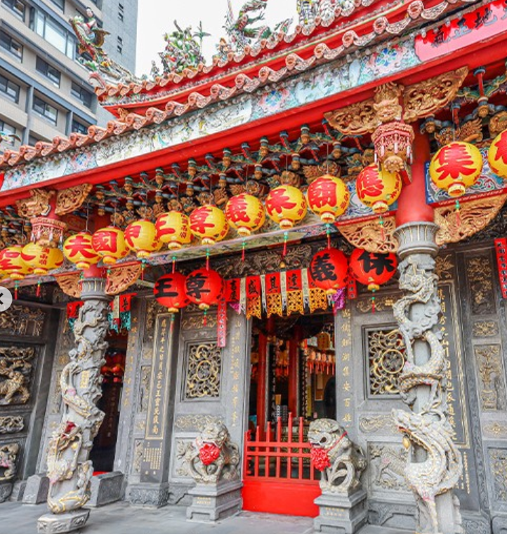

關於本廟
起源與沿革
木柵集應廟的廟誌中，記錄著張氏祖先來台的歷史以及保儀尊王保佑其祖先平安渡台的事蹟。 根據主委所述，當時是高、林、張三姓人家一同奉祀保儀尊王與申國夫人。但後來因故分家，透過抽籤分配原有的神尊與法器，其中張姓人士抽到的是歷史最悠久的香爐。此後，三姓人士各自請藝師雕塑其餘缺乏之神像，並在不同地方建立集應廟進行祭祀。這也是木柵集應廟擁有最古老香爐的由來。
在唐末黃巢之亂期間，張、高、林三姓族人為避戰亂，自河南光州遷移至福建安溪。在遷徙途中，他們深感保儀尊王的神力庇佑，使全族人得以安然抵達，於是於當地興建廟宇，虔誠奉祀。由於三姓族人在遷徙途中皆有感於「尪公」顯靈引導，便以「集應廟」作為廟名，象徵眾人共同感應神恩。 清康熙年間，由於福建生活困難，三姓族人攜手恭迎保儀尊王（俗稱尪公）與申國夫人（尊稱夫人媽）來台開墾，並一同奉祀祖神，延續信仰。後來因「頂下郊拚」事件引發族群間矛盾，三姓決議以抽籤方式和平分家，各自奉祀神明。 最終抽籤結果，張姓族人則得香爐（今木柵集應廟）、高姓族人得尪公神像（今景美集應廟）、林姓族人得夫人媽神像（今萬隆集應廟）。三姓族人隨後分別請藝師雕塑其所缺的神尊，於各地建廟，持續供奉保儀尊王與申國夫人，信仰因此在台灣各地開枝散葉，延續至今。
建築特色
木柵集應廟雖然在1978年重建，但仍保留了許多臺灣傳統廟宇的建築精髓。最引人注目的是其燕尾翹脊和屋脊上精緻的剪黏藝術，展現了傳統工藝的巧奪天工。廟內隨處可見精美的石雕與壁飾，講述著古老的故事與吉祥寓意，加上充滿歷史感的匾額與柱聯，讓整座廟宇散發著濃厚的文化氣息。此外，廟宇在傳統格局的基礎上，也與時俱進地增設了文昌殿與財神殿，以滿足信眾多元的信仰需求。
